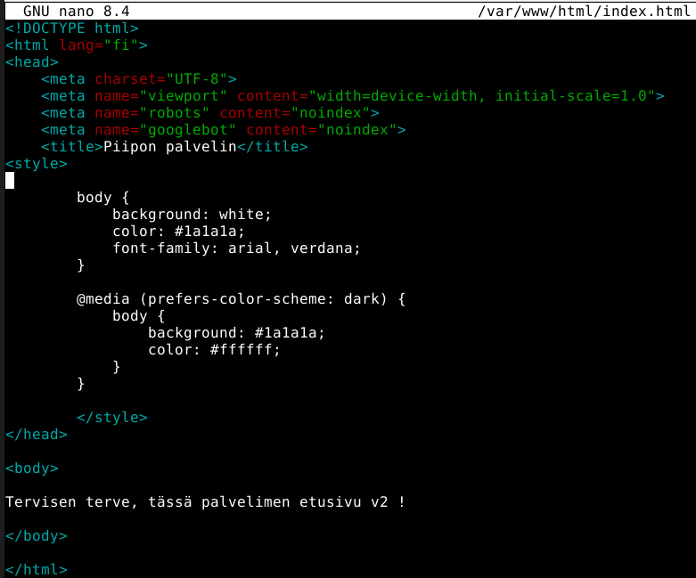
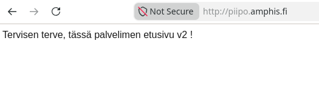

-
-
-
Tarkoituksena oli siis asentaa web-palvelin omaan VPS-palvelimeen. Tämän olin jo tehnyt ensimmäisessä harjoituksessa, joten raportointi on tehty osittain ulkomuistista
sudo apt-get update && sudo apt-get upgrade -y
Sitten Apache2- sekä nginx-paketit:
sudo apt-get install apache2 -y ja sudo apt-get install nginx -y
Poistettiin tilapäisesti Nginx käytöstä komennolla sudo systemctl disable nginx --now, ja otettiin Apache käyttöön heti komennolla sudo systemctl start apache2.service --now
Tarkistetaan että molemmat on asennettu systemctl status apache2.serviceja systemctl status nginx.service
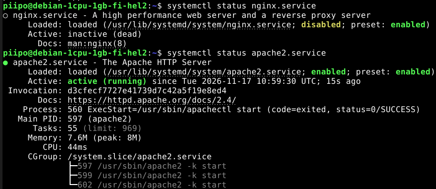
Seuraavaksi vaihdettiin Apachen oletusetusivu, joka onnistui varsin helposti nimeämällä etusivutiedosto ".a2default" - muotoon. Sudotellen sudo mv /var/www/html/index.html /var/www/html/index.html.a2default, sitten oman lisäys sudo nano /var/www/html/index.html
Oikeuksien ja omistajuuden vaihtaminen itselle sudo chown piipo:piipo /var/www/html/index.html sekä chmod 666 /var/www/html/index.html, jotta tiedostoa pääsisi muokkaamaan kaikki käyttäjät ilman sudottelua


Ensin apache2.service seis ja pois käytöstä sudo systemctl stop apache2.service && sudo systemctl disable apache2.service
Ja nginx.service käyttöön sudo systemctl enable nginx.service --now && sudo systemctl start nginx.service
Lopuksi uudelleenkäynnistys sudo reboot
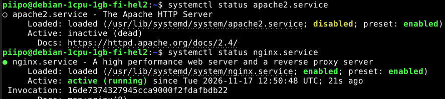
Molemmat web-palvelimet käyttävät samaa tiedostoa hakemistossa /var/www/html/index.html etusivulle, joten muokkasin hieman tiedostoa nähdäkseni että se toimii.
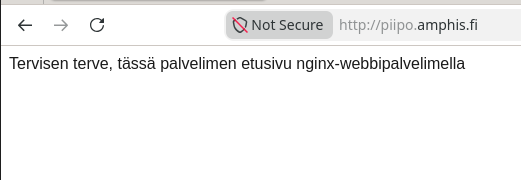
Sitten nginxin asennus Ansiblella. Koeajo ennen varsinaista suoritusta, joten muokataan site.yml - tiedostoon hosts: localhost ja uusi rooli roles: - nginx
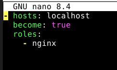
Seuraavaksi lisätään tehtävähakemistot nginx - asennukseen: mkdir -p ~/ansible/roles/nginx/{files,handlers,tasks}
files: Kopioitavat tiedostot (testi.conf, index.html)handlers: Handler - tehtävä (nginx uudelleenkäynnistys)tasks: Varsinaiset tehtävät (Asennus, tiedostokopiointi, käyttöönotto, handlerin aktivointi)Lisätään handlers ja tasks - hakemistoon tehtävätiedostot (main.yml) sekä "fls" konfigurointi- ja etusivutiedostot (testi.conf sekä index.html)
Hakemistorakenne näyttää nyt tältä:
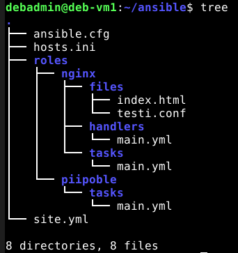
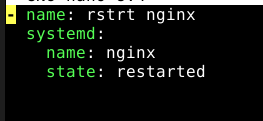
rstrt nginx: Handler-tehtävän nimi, joka suoritetaan notify: rstrt nginx - koodinpätkällä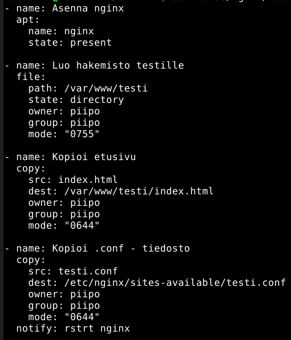
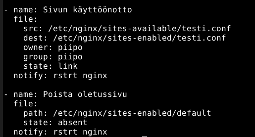
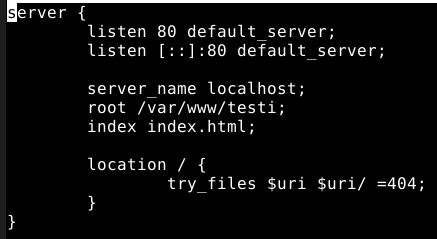
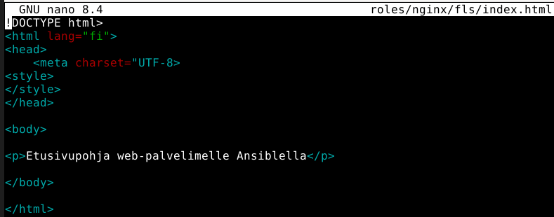
Ensimmäinen testiajo tuotti virheen. Hetken mietiskelyn jälkeen tajusin, ettei localhost-laitteessa ollut muita käyttäjiä kuin "debadmin" tietysti, joten muokkasin nginx/tasks/main.yml käyttäjät oikein.
nginx documentation - Beginner's Guide | Luettavissa: Linkki | Luettu 17.11.26
Karvinen, T. 2026. Apache installed with Ansible - quick notes | Luettavissa: Linkki | Luettu 17.11.26
Ansible Community Documentation - Handlers: running operations on change | Luettavissa: Linkki | Luettu 16.11.26
Ansible Community Documentation - ansible.builtin.service module | Luettavissa: Linkki | Luettu 16.11.26
Corrarello, N. 2026. The Active Directory Era Is Finally Over. Infisical | Luettavissa: Linkki | Luettu: 17.11.26